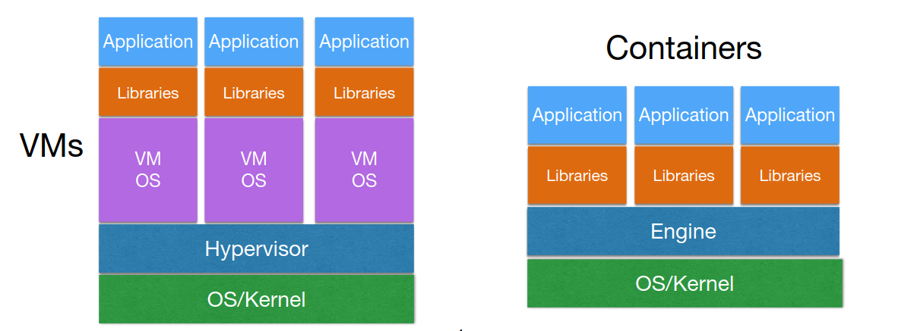
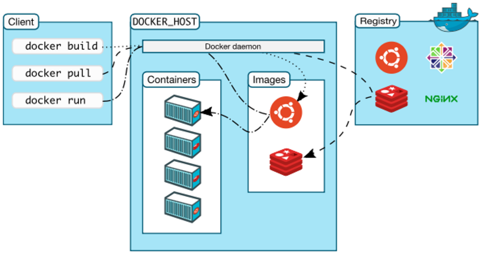
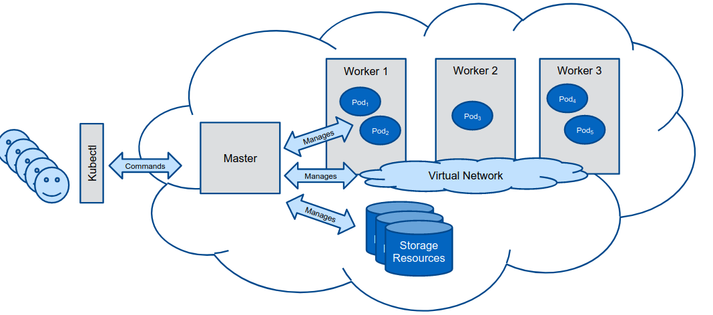

Teórica 06
Virtualização
Containers
- Ambiente mais leve que permite ter aplicações a correr e ser bastante portável.
- O Sistema Operativo não se encontra quebrado do host.
- Ao invés disso, isola conjuntos de processos e recursos.
- O Sistema Operativo não se encontra quebrado do host.
- Porque é que são úteis?
- Permitem correr diferentes versões da mesma aplicação na mesma máquina;
- São fáceis de portar e de migrar;
- A instalação é feita uma única vez.
Linux Containers
- São muito leves e não precisam da virtualização de recursos;
- A engine isola e configura os recursos;
- O sistema do host é compartimentado para cada container em termos de CPU e I/O;
- Existe uma noção de isolamento entre containers.

Building Blocks
- Namespaces (Isolamento)
- Ajudam a compartimentar grupos de processos, isto é, a que grupos cada container poderá aceder;
- Permite a partilha de recursos do host entre diversos containers sem conflitos.
- Control Groups (Gestão de Recursos)
- Permite o alocamento de recursos entre grupos de processos;
- Restringe a quantidade de recursos utilizada por cada container;
- Um grupo de processos terá acesso a um recurso da máquina, no entanto, apenas poderá usar parte dele.
- SELinux (Segurança)
- Garante segurança de forma a que um container não seja capaz de interferir com outros containers ou com o sistema host;
- Garante controlo de acesso e políticas de segurança.
Tipos
- OS Containers
- Simulam um sistema operativo leve;
- Exemplo: LXC.
- Application Containers
- Focado em empacator uma app e as suas definições;
- Cada aplicação é vista como um processo independente;
- Exemplo: Docker.
Docker

Cliente Docker
- Componente utilizada para interagir com a plataforma do Docker;
- Envia pedidos para o Daemon (engine) do Docker;
- Gere tudo aquilo que se possa fazer com o cliente;
- Expõe a API do Docker para:
- Correr e gerir containers e redes;
- Leitura de logs e métricas;
- Extração e gestão de imagens.
Daemon do Docker
- Utiliza a API do Docker para receber pedidos do Cliente Docker;
- Gere imagens do Docker, Containers e Redes.
Objetos do Docker
- Image - ficheiro imutável que contém o source code, as bibliotecas e outros ficheiros necessários para uma dada aplicação correr;
- Container - instância runnable de uma Image.
Registo do Docker
- Repositório de imagens do Docker.
Kubernetes
- Automatizam o deployment, o escalonamento e a gestão de containers;
- Garantias:
- Gestão de redes;
- Orquestração de armazenamento modular;
- Agendamento, self-healing e escalonamento.
Cluster de Kubernetes
- Os clientes interagem com o nodo Master (p.e. através do
kubectlno terminal); - O nodo Master gere o cluster (p.e. nodos worker, pods, redes, armazenament, ...).

Pod, Deployument e Service
- Pod: unidade computacional composta por um ou mais containers;
- Deployment: especifica o ambiente onde vão correr os pods;
- Service: expõe um grupo de pods como um serviço de rede.
Rede
- Cada pod tem um endereço de IP único no cluster;
- As conexões entre pods (mesmo em nodo worker diferentes) pode ser gerida através dos overlays de redes.
Armazenamento
- Os pods podem aceder a volumes de armazenamento providenciados por diferentes backends de armazenamento.
- Armazenamento Efémero: os dados sobrevivem apenas durante a sessão;
- Armazenamento Persistente: os dados sobrevivem mesmo após as sessões.
Containers vs Máquinas Virtuais
- A escolha deve depender dos objetivos do utilizador! As diferentes soluções são melhores para diferentes cenários.
- VMs são úteis quando é necessária uma virtualização full server (do Sistema Operativo);
- Containers são úteis para gerir diferentes bibliotecas/aplicações.
Vantagens dos Containers
- Mais rápidos;
- Melhor utilização de recursos;
- Podem ser lançadas em servidores virtualizados ou físicos.
Desvantagens dos Containers
- Pior isolamento/segurança (Kernel e Sistema Operativo são partilhados);
- Menor flexibilidade a correr em diferentes Sistemas Operativos.